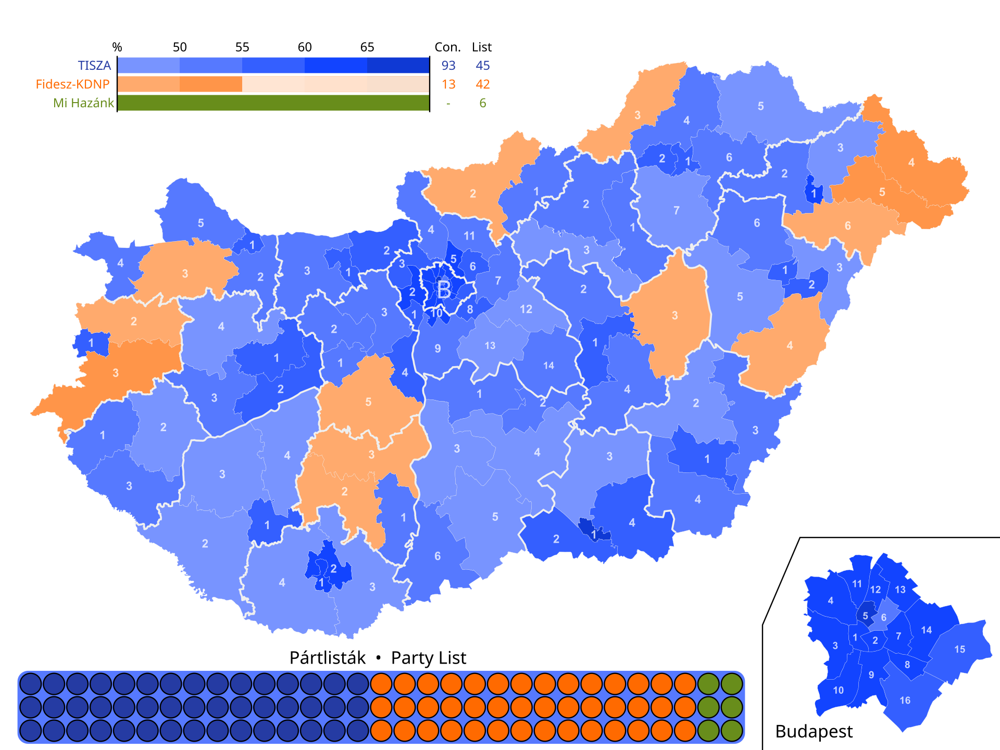
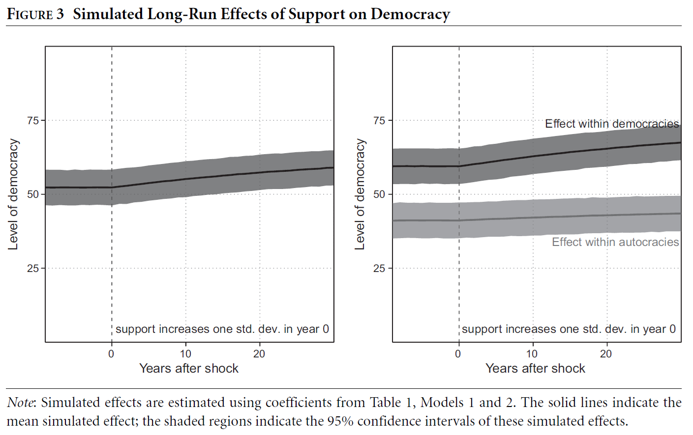
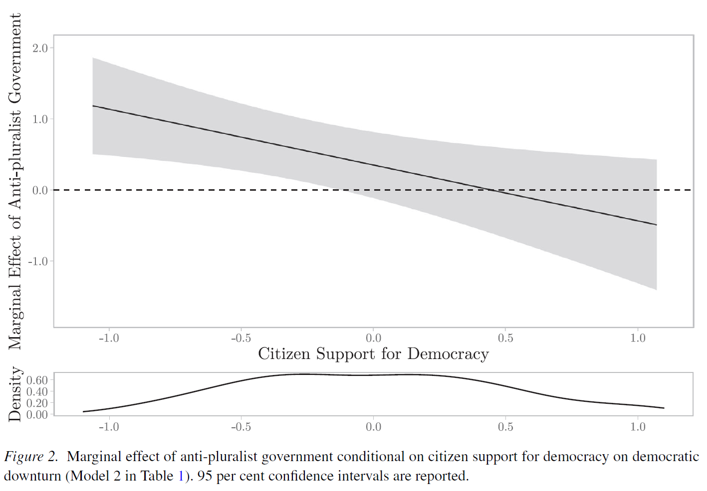
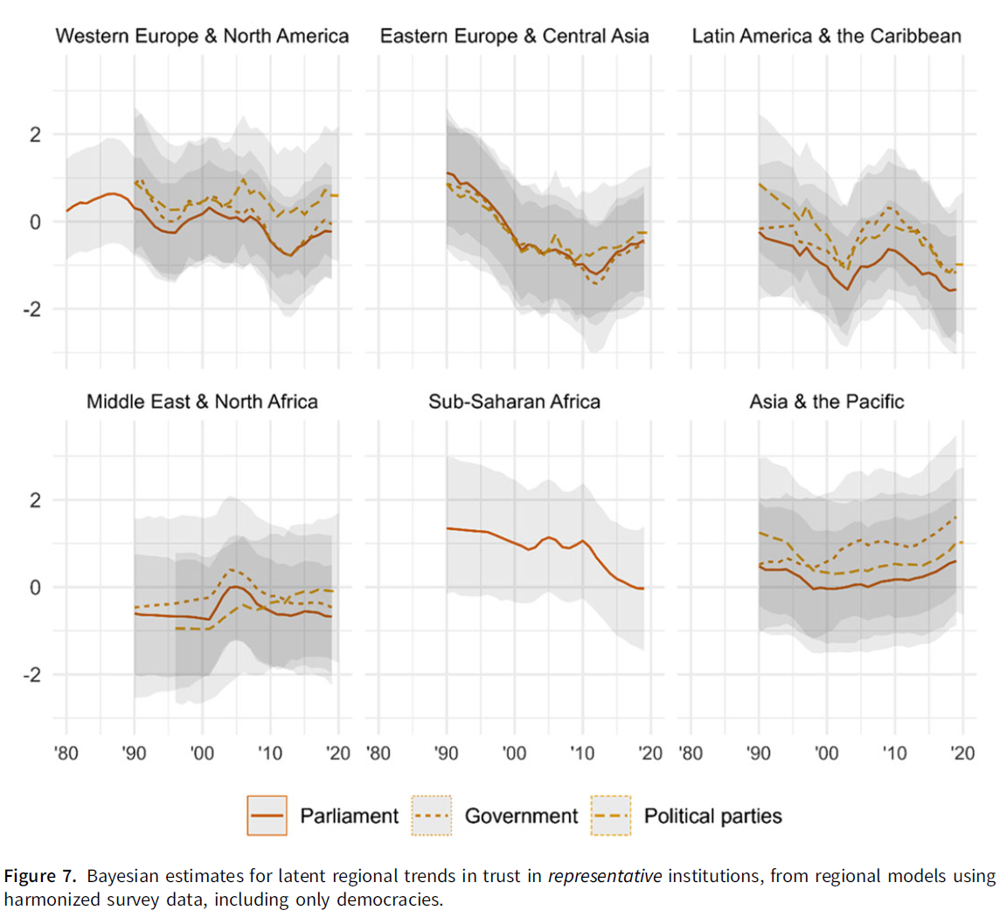

Support for Democracy and Political Trust
The Politics of Democratic Backsliding
Session 08
University of Lucerne
Introduction
Note on the response papers
They are mandatory, i.e., needed to pass the course
Some of you have have not submitted them for the correct block, or at all
If this applies to you, talk with me during the lunch break
PS. The Block IV response papers cannot be about session 14, only sessions 12 and 13
2026 Hungarian elections
Held on 12 April 2026 with Orbán seeking a fifth consecutive term after 16 years in power
Record-breaking turnout over 77%, the highest in post-Communist Hungarian history
Péter Magyar’s centre-right Tisza party won a landslide with 138 seats (53.6% of the vote), a two-thirds supermajority; Fidesz collapsed to 55 seats (37.8%)
Implications
Magyar can amend Hungary’s constitution; expected reversal of Orbán’s dismantling of judicial independence, media freedom, and checks and balances; realignment with the EU
- Despite (or thanks to?) Orbán’s tilted playing field: control of media, judiciary, and electoral rules

What is the role of citizens in democratic backsliding?
This session’s goals
- Define the concept of democratic support
- Understand the relationship between democratic support and democratic backsliding
- Review trends in specific support and measurement issues
- Students’ presentation: the case of Bangladesh
Support for democracy
Seymour M. Lipset and David Easton
Seymour Martin Lipset (1922–2006)
- American political sociologist; professor at Columbia, Harvard, Stanford
- Introduced the concept of political legitimacy as a foundation for regime stability
David Easton (1917–2014)
- Canadian-American political scientist; University of Chicago
- A Systems Analysis of Political Life (1965): developed the most influential framework for public support for political systems
The concept of democratic legitimacy
Lipset, 1960
Political legitimacy: the belief that existing political institutions are the most appropriate or proper ones for society
Lipset’s core hypothesis:
Democracies require legitimacy to survive; without it, they are vulnerable to breakdown in times of crisis
- Legitimacy is distinct from effectiveness (how well government performs)
- A regime may be effective but illegitimate, or legitimate but ineffective
- In the long run, legitimacy is what sustains regimes through crises
David Easton’s framework of support
Easton, 1965
Three objects of support:
- Political community: the nation or group of people sharing a political system
- Regime: the constitutional order, rules of the game, institutions
- Authorities: incumbent governments and officials
Two types of support:
Specific support
Satisfaction with outputs
Instrumental and conditional
Tied to performance
Diffuse support
Principled attachment
Normative and durable
Independent of performance
Support for democracy and democratic backsliding
The democratic legitimacy hypothesis
Claassen, 2020
The Lipset-Easton theory of democratic support has been broadly accepted since the 1960s
But empirical evidence has been weak and contradictory:
- Existing tests relied on small cross-sectional samples (a few dozen countries, one point in time)
- Cross-sectional designs cannot account for country-specific confounders
- Contradictory results: some find a positive effect, others find null effects
The core problem: survey data on democratic support is fragmented across time, space, and question wording
Claassen’s empirical test
Claassen, 2020
Data: 3,765 national survey items on democratic support from 1,390 surveys, 14 survey projects, 150 countries, up to 30 years
Method: Bayesian dynamic latent variable model; estimates a smooth country-year panel of democratic support from fragmented survey items
Estimation strategy: dynamic panel TSCS models; support at \(t-1\) predicts democracy at \(t\), controlling for lags of democracy and country fixed effects
Outcome: V-Dem Liberal Democracy Index
Findings: support helps democracy survive
Claassen, 2020
Main finding: higher democratic support predicts subsequent improvement in democracy (positive and significant, OLS and GMM)
Key asymmetry: support matters more for democratic survival than for democratic emergence
- Within democracies: support is positively and significantly linked to democratic change
- Within autocracies: effect is positive but insignificant
Long-run effect: a one-standard-deviation increase in support predicts +7.67 V-Dem units after 30 years within democracies

Your responses
“[…] it remains unclear whether “democracy” means the same thing in all countries and contexts.” (Filippo Brambilla)
“[…] the article convincingly demonstrates that support is effective but is less clear about the specific mechanisms through which it operates.” (Filippo Brambilla)
“While Claassen’s study is highly effective in identifying a large dataset covering many countries, it remains, as already noted, limited in its ability to show the causal mechanisms” (Vanessa Rölli)
“A small-N design, focusing on a selected set of cases, would allow for a more detailed analysis” (Vanessa Rölli)
The elite-citizen interaction
Jacob, 2025
Empirical evidence shows that support matters, but the mechanisms are underspecified
This paper’s argument: democratic support constrains anti-pluralist governments through two mechanisms:
Electoral punishment: citizens committed to democracy vote out incumbents who undermine it
Backlash threat: high support raises the costs of backsliding (protests, opposition mobilization)
Elite-citizen interaction hypothesis: backsliding is most likely when anti-pluralist governments face low citizen support for democracy, otherwise, they moderate due to expected backslash
Evidence from dynamic TSCS, 1990-2019
Jacob, 2025
Data: longitudinal panel of ~100 democracies, 1990-2019
Key variables:
- Anti-pluralist government: V-Party anti-pluralism scores, weighted by seat share
- Citizen support: Claassen (2020) latent estimates, extended to 2019
Model: dynamic TSCS with OLS (Beck-Katz SEs) and System GMM; controls for polarization, clientelism, democratic stock, GDP, region trends
Key test: interaction between anti-pluralist government x citizen support
Findings: citizen support constrains backsliding
Jacob, 2025
Interaction term: negative and significant; anti-pluralist governments produce more backsliding when citizen support is low
Anti-pluralist parties in power + low citizen support = substantial democratic decline
Anti-pluralist parties in power + high citizen support = backsliding effect is attenuated
No reverse effect: citizen support does not predict subsequent anti-pluralist government orientation; the causal arrow runs one way

Trends and measurement issues
If support is generally high, why backsliding?
A puzzle emerges from Claassen’s data: democratic support is generally high across countries and regions, and support is associated with democratic survival
Yet backsliding is widespread and accelerating
Several possible resolutions:
- It is specific rather than diffuse support what declines
- Diffuse support measures are flawed
- Support is high but shallow (Session 09)
A crisis of political trust?
Valgarðsson et al., 2025
A long-running debate: is there a structural decline in political trust, or just trendless fluctuations?
- The disagreement may partly reflects analytical confusion; whether trust is declining depends on which institution, which country, and which period
Data: Bayesian latent variable models applied to 3,377 surveys from 50 projects in 143 countries, 1958-2019
Key distinction: representative institutions (parliament, government, parties) vs. implementing institutions (civil service, police, legal system)
Trends: a split picture
Valgarðsson et al., 2025
Representative institutions (parliament, government, parties): declining globally
- Trust in parliament: estimated decline of ~8.4 percentage points, 1990-2019
- Trust in government: ~7.3 percentage points decline over the same period
- Decline is significant and consistent across WENA, EECA, and LAC regions
Implementing institutions (civil service, police): stable or rising
Citizens are not losing faith in the state broadly; they are losing faith in representative democracy specifically

Measuring support for democracy: a new approach
Claassen et al., 2025
Existing survey items on democratic support have validity problems:
- Most items are vague (“democracy is preferable to any other form of government”)
- They are normatively desiderable
- They do not capture which aspects of democracy citizens value
New battery anchored in V-Dem’s definition of liberal democracy:
- 8 components: electoral democracy (5) + liberal component (3)
What the new battery reveals
Claassen et al., 2025
The battery shows variation within democracy support that blunt items miss:
- Citizens generally support electoral components more than liberal components
- E.g., support for judicial constraints on the executive is often weaker than support for elections
Implication: aggregate “support for democracy” may mask specific vulnerabilities
- Citizens may endorse democracy in principle while being indifferent to the very institutions backsliders target first
Conclusion
What is citizens’ support for democracy?
Does citizen support for democracy actually protect it?
Given what we have seen in Hungary, do you think citizen support matters to to stop backsliding?
Summary
- Democratic support can be distinguished between diffuse and specific; only the former is believed to sustain democracy
- The available evidence suggests that democratic support matters for democratic survival, but debates remain about the extent and mechanisms
- Most importantly, high support and increasing backsliding co-occur, a seeming paradox not yet resolved

Next session (11:00)
Session 09: Democratic Values and Hypocrisy
Case study: Nicaragua
Before…
Presentation by Elli & Jetesa:
Bangladesh
Thanks! 🙂

Hauptseminar - Spring Term 2026